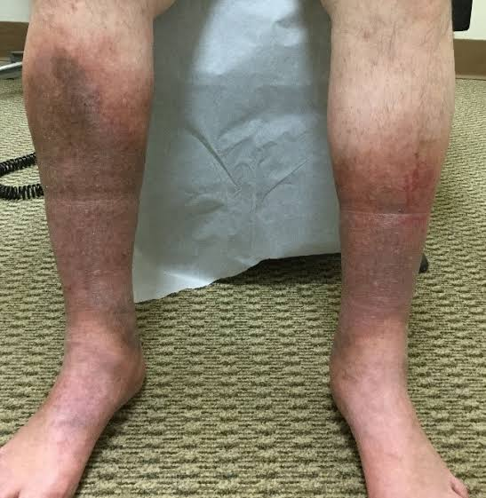
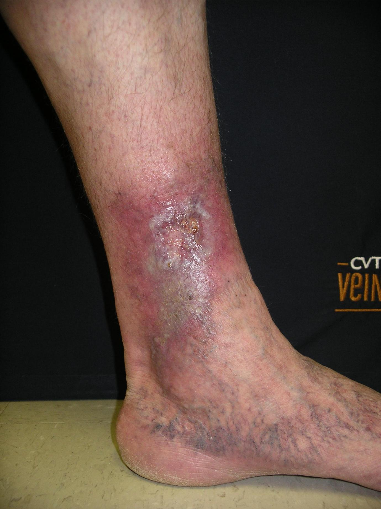
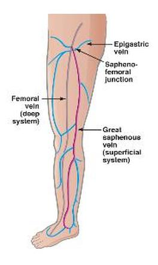
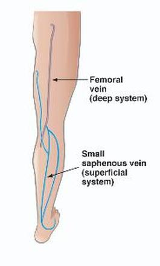

Venous Insufficiency
Your next patient is a 50 year old man who has presented to you because of pain and itchiness on both legs.
- On examination his ABI is 0.9 on the left leg and 1 on the right leg
- You have done an doppler USD:
- Incompetence in saphenofemoral veins and junction
- Incompetence in perforators
Task:
- Explain investigations and diagnosis
- Take history for 5 minutes
- Explain your management plan
- 0.9–1 is normal ABI
- This means:
- This is NOT peripheral arterial disease
3. Diagnosis – Terminology
Possible terms:
- Peripheral venous disease
- Venous disease
- Venous insufficiency
- Chronic venous insufficiency
What Chronic Venous Insufficiency Looks Like

- Does not always give bluish discoloration
- Old recalls: blue foot
- Usually:
- Dark discoloration
- Rash on lower limb
- Dry skin → ulcers
- Itchiness
- Venous eczema
- Dark discoloration

5. Venous System – Anatomy


“You have two main systems of veins in your leg.”
5.1 Systems
- Deep system → Femoral veins
- Superficial system → Saphenous veins
5.2 Junction
- Sapheno-femoral junction
- Where superficial connects to deep
- Where superficial connects to deep
5.3 Perforators
- Connect superficial ↔ deep
7. Structure and Time Management
- Explain investigations + diagnosis → ~1.5 minutes
- History → 4–5 minutes
- Management → Bullet points
8. Explaining the Investigations – Patient Explanation
8.1 Introduction
“I have your investigation results with me. I’ll explain them to you. Is there anything you want to tell me before I start?”
8.2 Build Understanding: Arteries vs Veins
“We have two types of blood tubes in our body, and specifically in your legs.
The arteries move blood from the heart to the legs, and the veins return blood from the legs back to the heart.”
8.3 Explain ABI
“We have done a test called the ankle-brachial index, where we compared the blood pressure in your arm and your ankle.
Your ABI is normal, which means the arteries in your leg are functioning normally.”
8.4 Explain Ultrasound
“The ultrasound shows that the veins in your leg are not functioning properly.
They are not able to drain or transfer the blood efficiently.”
8.5 Link to Diagnosis
“This confirms that you have a condition called venous insufficiency or venous disease.
This means your veins are not working properly and have difficulty moving blood out of your legs.”
9. History Taking (5 Minutes)
9.1 Opening Question
“Can you tell me a little bit more about your pain?”
9.2 Pain Analysis – SIQORAA
- Use same structure as arterial disease
- Ask about:
- Night pain> +
- Morning vs end of day
- Walking vs rest
- Walking uphill or downhill
- Night pain> +
Night pain question:
- “What do you do to make it better?”
- Arterial disease → hang legs down
- Venous disease → walk around to pump blood
9.3 General MSK Questions
- Swelling
- Rashes
- Ulcers
- Stiffness
- Deformity
9.4 Venous-Specific Questions
- Ulcers
- “Do you have any ulcers or have you had ulcers before?”
- “Do you have any ulcers or have you had ulcers before?”
- Dry skin / itchiness
- Numbness
Varicose Vein Questions
“Have you noticed any dilated blood tubes on your legs?”
- Previous DVT
“Have you had any clots in your leg before?”- Often positive
9.5 Cardiovascular Risk Factors
Even though more important in arterial disease:
- Smoking
- Alcohol
- Diet
- Exercise
- Overweight
- Family history of heart disease
- Blood vessel disorders
9.6 Extra Time – If Available
- Falls risk
- Falls
- Vision
- Hearing
- Stairs at home
- Falls
- Neurology
- Numbness
- Pins and needles
- Weakness
- Numbness
Management – Key Principle
The most important part of your management is to prevent ulcers.
11. Management – Bullet Points
11.1 Foot & Skin Care
“I want to refer you to a podiatrist for foot care and education.”
- I would like u to apply Regular moisturizers
- I would like u to Check skin every night
- Look for cracks and ulcers
11.2 Leg Elevation & Posture
“When you’re sitting, watching TV, I want you to elevate your leg.”
- Avoid:
- Long standing
- Long sitting
- Long standing
11.3 Compression
“I want you to wear compression socks.
These improve the blood flow in your legs.”
11.4 Lifestyle & Exercise
- Healthy diet → dietitian
- Regular exercise → exercise physiologist > Exercises for legs to improve blood flow
11.5 Smoking & Alcohol
- Cut smoking
- Reduce alcohol
11.6 Escalation
“If your symptoms get worse, I will refer you to a vascular surgeon for surgery.”
11.7 Red Flags
- Ulcers
- Worsening pain
“If this happens, come back.”